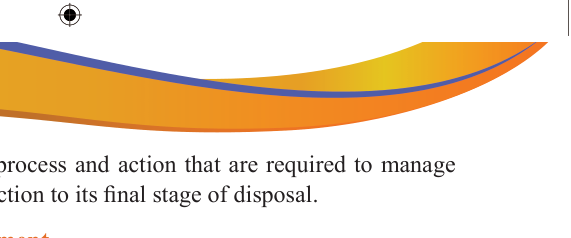

safe. Waste management is the process and action that are required to manage waste from the level of its production to its final stage of disposal.
Significance of waste management
Waste management is the practice of using various preventive methods to reduce the negative impact of waste on the environment and human health. The following are the significance of waste management:
Preservation of natural resources and reduction of pollution: Appropriate waste management contributes to environmental protection.
Public health: By eliminating areas where pests can grow, waste management helps stop the spread of diseases.
Sustainability: By decreasing, reusing, and recycling waste, we can protect the environment and reduce the quantity of wastes dumped in landfills.
Source of waste
There are many sources which generate waste. Some of them are detailed below:
Bulky wastes: There are various sources where waste can be generated. These include shops, offices, hotels, non-government markets, stores, tyres, electronics, plastic bags, bottles, buckets, packaging materials, paper fibres, and discarded electronic waste.
Industrial wastes: such as paper and pulp wastes, oil refineries, tanneries, distilleries, thermal power plants, chemical industries, metal smelters, coal, ash, acids, chemicals, textiles, plastics, nuclear wastes, unused metal sheets, metal scraps, rubber, leather, toxic effluents, fibres (residues), heavy metals, solvents, resins, sludge and abrasive.
Agricultural wastes: such as farm waste, livestock yards, crop residues, biogases from sugarcane, outdated pesticides and fertilisers, manure, weedicides, fungicides, slaughter waste, plastics and containers.
Organics mining wastes: Waste rock, tailings, mine water, chemicals and others.
In the art-making process, an artist is using a range of materials from solid, liquid and chemicals. However, on completion, some of the materials remain in different status. For example, some are distorted materials such as damaged paper and sculpture materials.